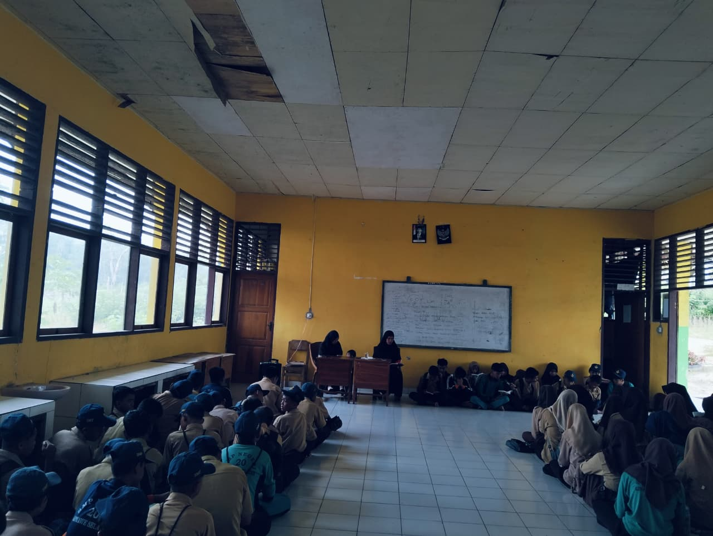

Sistem Penerimaan Murid Baru SMPN 20 Konawe Selatan yang modern, transparan, dan mudah diakses.
Informasi Sistem Penerimaan Murid Baru SMPN 20 Konawe Selatan

Sistem Penerimaan Murid Baru (SPMB) merupakan proses seleksi dan penerimaan peserta didik baru yang dilaksanakan secara adil, transparan, dan sesuai dengan ketentuan pendidikan.
Proses pendaftaran dapat dilakukan secara online maupun offline untuk memudahkan calon peserta didik. Tidak di pungut Biaya/Gratis.
Dokumen yang wajib disiapkan
Dokumen identitas resmi calon peserta didik.
Bukti hubungan keluarga dan domisili siswa.
Bukti kelulusan dari sekolah sebelumnya.
Tahapan proses pendaftaran siswa baru
Klik tombol berikut untuk melakukan pendaftaran online SMPN 20 Konawe Selatan.
Formulir Pendaftaran